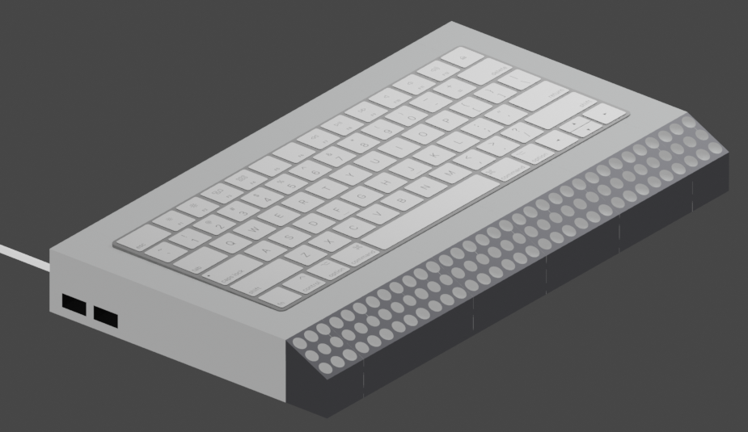
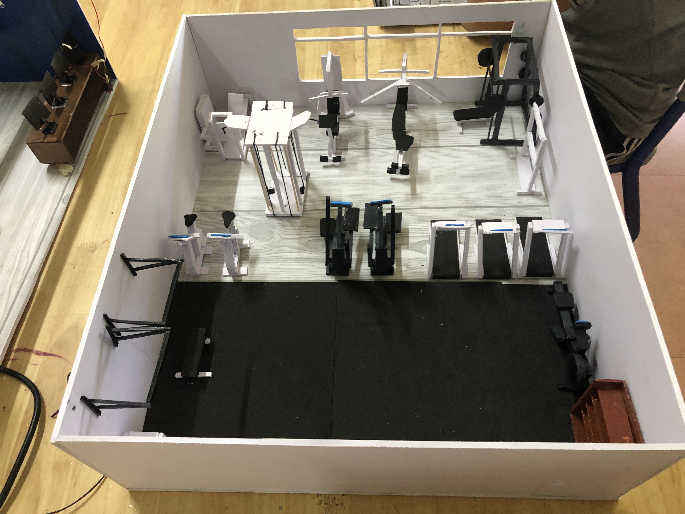

A selection of things I have built, designed, repaired, and prototyped across web, design, engineering, and hands-on hardware work.
Formula SAE Pitot Tube DAQ Board
Formula SAE / PCBDesigned and iterated a pitot tube data acquisition PCB for Wisconsin Racing's aerodynamics system. The board reads airspeed sensor data, conditions the signal, and interfaces with an ESP32 so the team can debug and validate vehicle aero behavior more efficiently.
Casio FX-CG50 Li-Po Charge Modification
Power ElectronicsDesigned a custom PCB to replace AAA batteries with a USB-C rechargeable Li-Po system. The design integrates charging, protection, voltage regulation, and power management while keeping the calculator's original form factor usable.
PC Performance Optimization & Hardware Refurbishment
DiagnosticsOptimized desktop systems through component selection, benchmarking, undervolting, and thermal tuning. I also refurbished malfunctioning laptops through teardown, diagnostics, and component replacement, including restoring a ThinkPad X1 Carbon with donor parts.
Home Server & Virtualization Lab
SystemsBuilt a self-hosted server environment for NAS storage, Docker services, and Proxmox virtual machines. The setup gives me more control over my tools, reduces reliance on cloud services, and doubles as a lab for Linux, networking, and local AI workflows.
Heatsink Airflow Optimization
CFD / ResearchFor my IBDP Extended Essay, I studied how airflow affects heatsink performance using controlled thermal experiments and ANSYS Fluent simulations. The goal was to connect real measurements with CFD models and better understand practical heat dissipation.
Personal Website
WebMade using HTML and CSS from scratch and hosted on GitHub. Used for showcasing my portfolio and projects.
View Project →ICTS Job Shadow Website
WebMade using HTML and CSS from scratch and hosted on GitHub. Used for organizing and providing Python notebooks and lecture notes during my time at ICTS.
View Project →IB Resources Website
WebWebsite compiling free IBDP and MYP resources to help fellow students in the curriculum.
MYP Personal Project
Research / 3DConducted research through articles, online sources, and user interviews. Recommended battery swapping stations to improve EV charging speed and convenience, then created a Blender animation to illustrate the concept.
Gained skills in modeling, rigging, animating, and using computer hardware effectively for rendering.
History of Internet Video
VideoVideo outlining the history of the internet for the Individuals and Societies subject.
SpaceX Physics
Web / PhysicsWebsite made in 8th grade analyzing the launch of the SpaceX Falcon 9 rocket.
View Project →Refurbishing Old Laptops
HardwareUpgraded old laptops, including replacing an HDD with an SSD to improve performance. Repurposed the drive from a broken laptop as external storage.
Lego Mindstorms Cleaning Robot
RoboticsBuilt and programmed a sweeping robot during COVID-19 lockdown using Lego Mindstorms.
Paper Plane Launcher
PrototypeUsed motors and other components to build a paper plane launcher to accompany a physics activity in school.
DIY Racing Wheel
Hardware / ControlsBuilt a steering wheel out of cardboard and two discarded mice to control racing games. Used AutoHotkey to experiment with control scripts.
DIY Ultralight Mouse
Hardware / DesignUsed parts from an old wireless mouse and gave it a new shell, prototyped using Blender and crafted using foam board.
MYP Design Projects
DesignA set of MYP design prototypes and explorations, including an app concept, a braille keyboard prototype, and a physical gym prototype.
MYP 4: Culture Acclimatization App
App concept that helps users acclimatize with the cultures of foreign countries.
MYP 5: Prototype of a Braille Keyboard
Prototype of a braille keyboard with a built-in display to aid the visually impaired. The mechanism reads the content of a text box and makes it possible to feel the pattern.

MYP 5: Physical Gym Prototype
Physical prototype of a gym proposed for the school to aid students in improving physical fitness.
